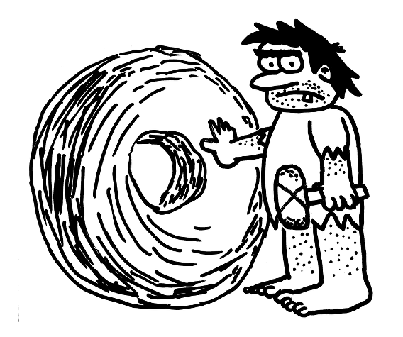

CrudFaces Don't reinvent the JSF wheel.

What is CrudFaces?
- Provides what is useful for 80% of JSF projects, 80% of the time. CrudFaces does a few things which, as experience shows, are useful for most JSF environments, and it does these things right.
- Makes it easy to write JSF applications which by default work and look good. CrudFaces applies the necessary hacks and workarounds so you can concentrate on adding actual business value.
- Makes it easy to write JSF applications the right way. CrudFaces doesn’t just solve everyday problems, but helps you build solutions according to well-known best practices over all application layers.
- Built on the shoulders of giants. CrudFaces promotes and relies on a “best of breed” tech stack (PrimeFaces, OmniFaces, Bootstrap, Font Awesome) and helps integrating these technologies.
- Provides a modern framework for modern applications. CrudFaces doesn’t waste resources trying to stay backward-compatible with obsolete (browser) technologies.
Also,
- It has a small footprint (< 100KB).
- It’s free and open source forever.
- It comes with detailed, human-readable documentation.